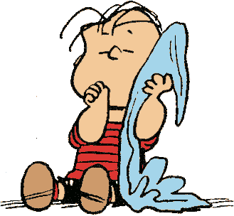

Charlie Brown

Despite his history of conflicted loyalties, his constant disrespect for Charlie Brown, and his inability to remember his name (he refers to him as "that round-headed kid"), Snoopy has shown both love and loyalty to his owner. Charlie Brown would often get irritated at Snoopy's flights of fancy with the comment, "Why can't I have a normal dog like everyone else?" He joins Charlie Brown in walking out of a game of Ha-Ha Herman when Peppermint Patty insults Charlie Brown, unaware that Charlie Brown is within earshot. He also helps Charlie Brown recover his autographed baseball when a bully takes it and challenges Charlie Brown to fight him for it. When Charlie Brown has to stop dedicating himself to making Snoopy happy, Snoopy replies, "Don't worry about it. I was already happy." In The Peanuts Movie, Snoopy remains loyal to Charlie Brown, supporting and caring for him throughout the movie.
Lucy Van Pelt
Snoopy frequently tries to kiss Lucy on the cheek or nose, which Lucy, who is afraid of dog germs, thoroughly hates. Despite her distaste of doggy kisses, Lucy seems to care for Snoopy: in Snoopy Come Home, Lucy is sad to see him go and is (momentarily) glad when he comes back home. In some strips, Lucy goes to Snoopy for help, such as in the April 16, 1961 strip, wherein a jealous Lucy and Frieda are beating each other up at Schroeder's piano, Lucy ends up winning, and shakes hands with Snoopy in the end, looking slightly injured. Snoopy also commandeers Lucy's psychiatric booth either in her absence or when she ends up being the one needing help. In Snoopy!, Lucy and Snoopy hug each other during the song "If Just One Person".
Linus Van Pelt

Snoopy often tries to steal Linus's blanket, leading to slapstick fights and wild chases, the latter of which usually involve Snoopy running up, grabbing the blanket in his mouth, then running off with Linus holding on for dear life, and finally swinging Linus and the blanket around and around in a circular motion through the air before letting go and they both fly off to who-knows-where.
Peppermint Patty
Peppermint Patty often refers to Snoopy as a "funny-looking kid with a big nose", unaware that he is a beagle. In one instance, she has him serve as her attorney in a case involving the school dress code. In the March 21, 1974, strip, Marcie tells Peppermint Patty that Snoopy is a beagle, finally resulting in her realizing his true identity. Snoopy serves as Peppermint Patty's watchdog several times. She is one of the few girls who does not get disgusted after being kissed by him.
Sally Brown

Like Lucy, Sally does not care that much for Snoopy and often calls him a stupid beagle. Sally usually complains when her big brother asks her to feed Snoopy whenever he is away from home. While she is still an infant, Sally has a friendly and playful relationship with Snoopy. In later years, Sally occasionally enlists Snoopy's help in school assignments. She even treats him to an ice cream cone (a very tall ice cream cone, with scoops of about a dozen flavors) when Snoopy helps her get an "A" on a report about "Our Animal Friends". In one storyline, Sally uses Snoopy as a "weapon" to help protect her from bullies on the playground (Snoopy barks loudly at anyone who threatens Sally, leading Snoopy to comment, "I feel like a can of mace!"), but this ends in disaster when Snoopy sees an old girlfriend of his and runs off to meet her, abandoning Sally and leaving her to get "slaughtered" by the playground bullies.
Schroeder

Schroeder does not mind much when Snoopy sits against his toy piano, except when Snoopy dances on top of the piano, much to Schroeder's annoyance. He also sometimes plays with the notes coming from the piano.
Rerun Van Pelt
Rerun, the youngest child character in the strip, plays with Snoopy sometimes. In some strips, Rerun and Snoopy are playing cards with each other, both of them clueless about the rules.
Woodstock
Woodstock is Snoopy's best friend and sidekick. He is a small, yellow bird of indeterminate species. He speaks in a chirping language that only Snoopy and his other bird friends can understand. In return, the birds somehow understand Snoopy's thoughts. In some strips, Snoopy can be seen telling a joke to Woodstock and both laugh so hard they end up falling off the doghouse. Woodstock sometimes sleeps on top of Snoopy's nose, such as in one strip where Snoopy says "Never share your pad with a restless bird".
Pig Pen

Pig-Pen is known for his perpetually filthy overalls and the cloud of dirt and dust that surrounds him everywhere he goes. When he takes a deep breath (to sing, for example), the dust rises briefly around him. He has proudly referred to his personal cloud as "the dust of ancient civilizations".[3] He cannot seem to rid himself of the dust for more than the very briefest of periods — indeed, in spite of his best efforts, it appears that he cannot stay clean.
Franklin
Lila was Snoopy's owner before Charlie Brown. Snoopy visits her in the cartoon Snoopy Come Home and struggles to decide whether to stay with Charlie Brown or go back to Lila. Lila quickly persuades him to leave Charlie Brown so Snoopy can live with her again. However, upon arriving at her apartment complex, Snoopy is very relieved to see a "NO DOGS ALLOWED" sign and returns to live with Charlie Brown.
Marcie
Lila was Snoopy's owner before Charlie Brown. Snoopy visits her in the cartoon Snoopy Come Home and struggles to decide whether to stay with Charlie Brown or go back to Lila. Lila quickly persuades him to leave Charlie Brown so Snoopy can live with her again. However, upon arriving at her apartment complex, Snoopy is very relieved to see a "NO DOGS ALLOWED" sign and returns to live with Charlie Brown.
Lila
Lila was Snoopy's owner before Charlie Brown. Snoopy visits her in the cartoon Snoopy Come Home and struggles to decide whether to stay with Charlie Brown or go back to Lila. Lila quickly persuades him to leave Charlie Brown so Snoopy can live with her again. However, upon arriving at her apartment complex, Snoopy is very relieved to see a "NO DOGS ALLOWED" sign and returns to live with Charlie Brown.